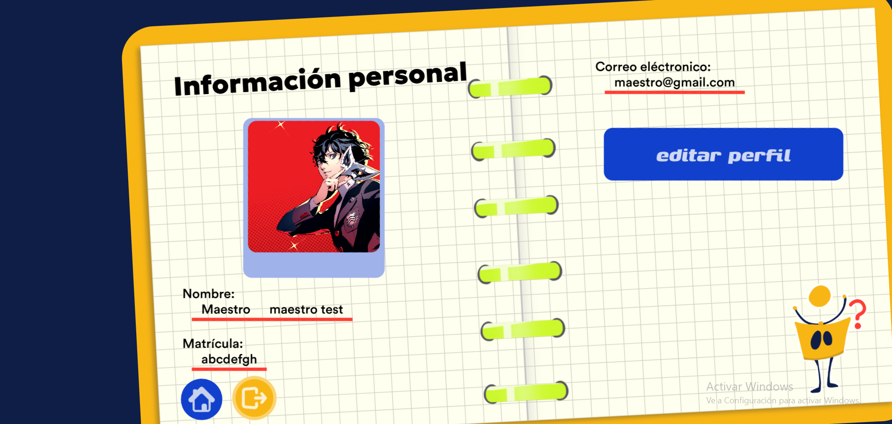

Manual de usuario
''

¡Hola!
¿Te perdiste y no sabes qué hacer?
Selecciona la página en la que te encuentras para obtener más informacion sobre qué es lo que puedes hacer.
Perfil
En esta sección podrás consultar y actualizar tus datos personales como docente dentro de la plataforma:
- Información personal: Visualiza tu foto de perfil, nombre completo, matrícula y correo electrónico institucional registrados.
- Editar perfil: Haz clic en el botón azul "editar perfil" para modificar los campos editables como tu nombre o correo electrónico.
- Guardar cambios: Una vez realizados los cambios, el botón cambiará a "guardar cambios" para actualizar tu información en la base de datos.
